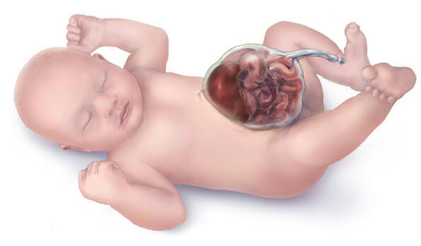

A onfalocele é a formação de alguns orgãos internos do bebê fora da cavidade abdominal, eles (geralmente intertino e figado) se formam dentro de uma membrana fina fora do abdomen.
As causas da onfalocele ainda não estão muito bem estabelecidas, no entanto é possível que aconteça devido a uma alteração genética. Além disso, alguns fatores relacionados com a grávida podem aumentar o risco de onfalocele, como:
O Diagnóstico se tem através de exames periodicos e ultrassonografias e deve ser feito o quanto anyes pois é uma condição delicada e grave.
O tratamento pode vir por meuo de cirurgias durante e após a gestação, geralmente são feitas após a gestação por riscos menores, e são cirurgias fotoscopicas.